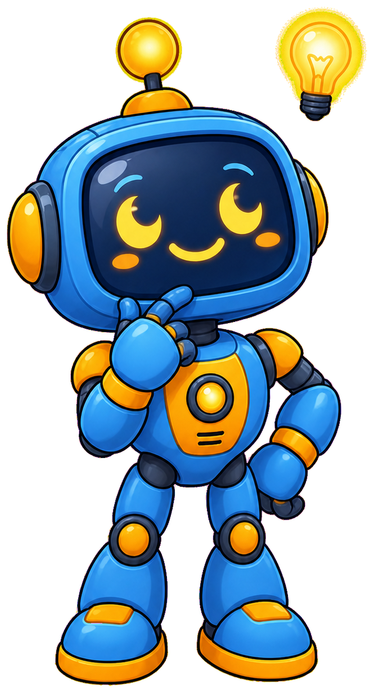
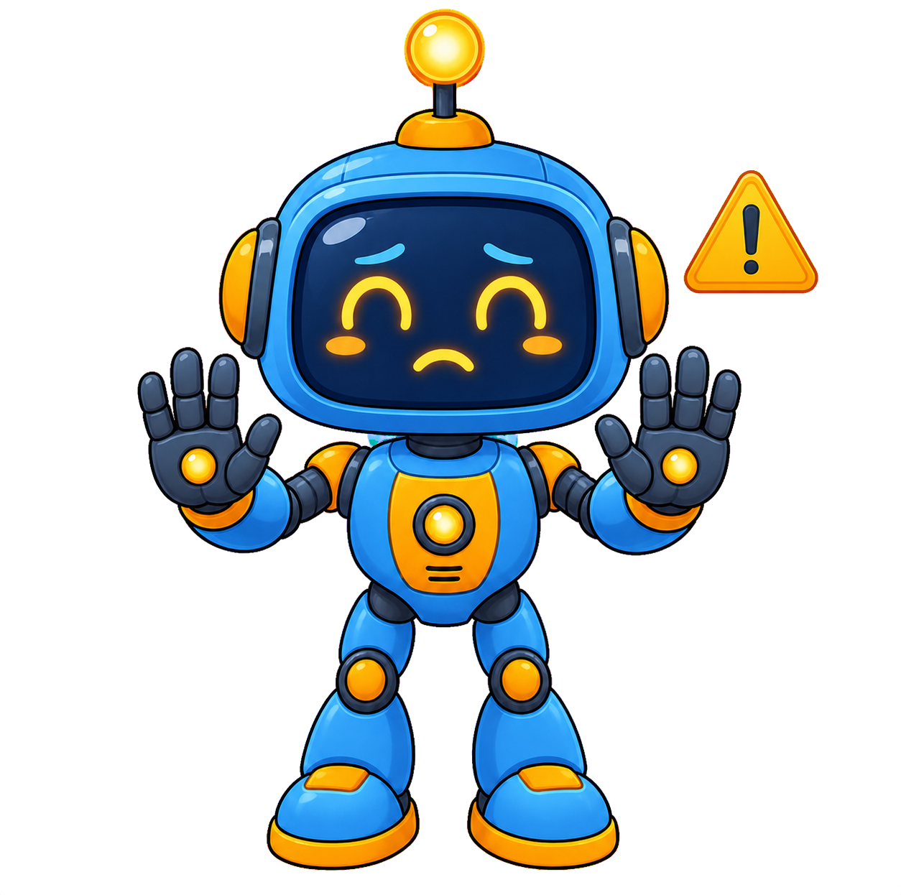

Gauging Interest and Holding Your First Meeting¶
Summary¶
Before a club exists, you need to know whether anyone wants it -- this chapter starts with surveying interest and assessing feasibility. It then walks through founding the club and running a well-designed first meeting, ending with attention to the all-important walk-in experience for a family's first visit. You will leave able to plan and run a first meeting that converts interest into attendance.
Concepts Covered¶
This chapter covers the following 18 concepts from the learning graph:
| Concept | CIS Score |
|---|---|
| Gauging Interest Survey | 2434 |
| Interest Survey Analysis | 120 |
| Establishing A New Club | 119 |
| Club Feasibility Assessment | 118 |
| Founding Team | 117 |
| First Club Meeting | 116 |
| Meeting Agenda Design | 87 |
| Promoting First Meeting | 86 |
| Flyer Design | 85 |
| Social Media Promotion | 84 |
| Word Of Mouth Promotion | 71 |
| Starting Small Strategy | 70 |
| First Three Students | 69 |
| Pilot Cohort | 68 |
| Walk In Experience | 67 |
| First Impression Design | 66 |
| Parent Perception | 65 |
| Student Perception | 64 |
Prerequisites¶
This chapter builds on concepts from:
You have a charter, safety paperwork, defined roles, and a governance structure ready to go. None of it matters yet, because no club has actually met. This chapter is about the leap from planning to reality: proving demand exists, deciding whether to commit, and running a first meeting good enough that the families who show up want to come back.
Time to find out if anyone's interested
 Let's build something great -- but first, let's make sure people actually want it! This chapter starts with a simple survey and ends with your very first session. That's a big leap, and I'll walk through every step with you.
Let's build something great -- but first, let's make sure people actually want it! This chapter starts with a simple survey and ends with your very first session. That's a big leap, and I'll walk through every step with you.
Before You Commit: Gauging Interest¶
A gauging interest survey is a short questionnaire, typically five to eight questions, distributed to prospective families or a venue's existing patrons to measure demand for a coding club before any resources are committed. A good survey asks concrete questions rather than abstract ones: not "would you be interested in STEM programming" (everyone says yes to that), but "if a coding club ran every other Saturday morning at this library, would your child attend," "what ages are the children who would attend," and "what day and time works best for your family." Specificity matters because a vague question produces a vague, unusable answer -- "would you be interested" invites polite agreement, while naming an actual day, time, and venue forces a respondent to check their real calendar before answering.
Distribution channel matters as much as question design. A survey posted only online reaches families who already follow the venue's social media, systematically undercounting families who don't; a survey handed out only on paper at one event misses families who weren't there that day. One library distributed a six-question paper survey at its existing story-time program over three weeks, supplemented it with the same questions as an online form linked from the library's newsletter, and collected 47 combined responses -- concrete enough to take to a branch manager as evidence, rather than a hunch, and broad enough across channels that no single group of families was systematically missing from the count.
Collecting responses is only half the work. Interest survey analysis is the process of turning raw responses into a decision: counting how many families gave a genuinely positive answer rather than polite interest, grouping by age range to see if there's a critical mass at any one level, and checking for a specific day or time that most respondents preferred. A useful discipline during analysis is separating "definitely would attend" from "might attend" as two distinct counts rather than one combined "interested" total -- a survey with 40 "might attend" responses and 7 "definitely" responses tells a very different story than one with the reverse split, even though both could be summarized as "47 interested families" if a founder isn't careful. The chart below shows what an analyzed set of survey results might look like for that same library's 47 responses.
Diagram: Interest Survey Results¶
Interest Survey Results
Type: chart
sim-id: interest-survey-results
Library: Chart.js
Status: Specified
Purpose: Show how raw survey responses get grouped by age range and interest level, turning a stack of paper forms into a decision-ready picture.
Bloom Taxonomy: Analyze (L4) Bloom Taxonomy Verb: interpret
Learning objective: Given a set of grouped survey results, the learner interprets whether there is enough concentrated interest, in which age range, to justify starting a club.
Chart type: Stacked bar chart
X-axis: Age range (6-8, 9-11, 12-14, 15-18) Y-axis: Number of survey responses
Data series (stacked within each age-range bar): - "Definitely would attend" (dark amber, #F5A623): 6-8: 4, 9-11: 14, 12-14: 9, 15-18: 2 - "Might attend" (light blue, #4A90D9): 6-8: 3, 9-11: 6, 12-14: 5, 15-18: 4 - "Not interested" (gray, #B0B0B0): 6-8: 2, 9-11: 3, 12-14: 4, 15-18: 3
Interactivity requirement (satisfied): hovering any bar segment shows the exact count and percentage of that age range's total responses; clicking a legend entry toggles that series on/off across all bars
Title: "47 Survey Responses by Age Range and Interest Level" Legend: Position top-right, matches the three series colors above
Annotations: A callout arrow pointing at the 9-11 age-range bar reading "Clearest concentration of definite interest -- 14 of 23 total 9-11 responses"
Key insight the learner should be able to state after interacting: the 9-11 age range has both the most responses and the highest proportion of "definitely would attend," making it the strongest starting cohort even though every age range shows some interest.
Implementation: Chart.js stacked bar chart with a custom tooltip callback showing count and percentage
A survey with 47 responses and a clear concentration in one age range, like the example above, is genuinely strong evidence -- far stronger than "several parents mentioned they'd be interested" during pickup conversations, which is easy to overestimate.
A survey turns a hunch into evidence

Notice what changed between "I think people would like this" and the chart above: nothing about the idea changed, but now there's a number a skeptical venue manager or a nervous first-time founder can actually trust.Deciding to Found the Club¶
Establishing a new club is the formal decision to move from "we think there's interest" to "we are doing this," and it is rarely a single dramatic moment -- it is usually the point where a founder stops asking "should we" and starts asking "how do we." That shift is supported by a club feasibility assessment: a structured check of whether the practical pieces are actually in place, covering at minimum a willing venue, at least one background-checked mentor beyond the founder, a modest starting budget for basic supplies, and the survey evidence from the previous section. A feasibility assessment is best done as a short written checklist rather than a mental impression -- a founder who can literally check off "venue confirmed," "budget of at least $200 for a first kit set identified," and "one co-mentor's background check submitted" has something concrete to show a skeptical spouse, a venue director, or their own nagging doubt, where "I feel like this could work" does not. A feasibility assessment that turns up a strong survey but no confirmed venue is not a green light yet -- it's a to-do list.
Founding rarely works well as a solo act. A founding team is the small group -- typically two to four people -- who share the initial workload of establishing the club: one person securing the venue, another handling the background-check and consent-form paperwork from Chapter 3, a third designing the first session's project. Spreading these roles across two or three people from the very beginning also means the founding team can absorb one member's schedule conflict or illness without the first meeting being cancelled outright. A founding team also directly addresses the single leader dependency risk from Chapter 1 before the club has even held its first session, which is far easier than retrofitting succession onto a club that already depends entirely on one person's memory -- a founding team of two people is, in effect, a club leader and an assistant leader (Chapter 3) who already know how to work together before day one.
The workflow below walks through how these three pieces connect into a single decision path.
Diagram: Should You Start This Club?¶
Should You Start This Club? A Feasibility Decision Path
Type: workflow
sim-id: club-feasibility-decision-path
Library: Mermaid
Status: Specified
Purpose: Walk a prospective founder through the concrete decision sequence from survey results to a go/no-go decision to establish the club.
Bloom Taxonomy: Apply (L3) Bloom Taxonomy Verb: implement
Learning objective: Given survey results and a candidate venue and team, the learner follows the correct sequence of feasibility checks to decide whether to establish a new club.
Steps (flowchart with decision diamonds): 1. Start: "Interest Survey Analyzed" -- click reveals "Confirm at least one age range shows strong concentrated interest, as in the chart above." 2. Decision: "Is a Venue Confirmed?" -- click reveals "A confirmed venue means a specific room, day, and time -- not a vague 'maybe we could use the community room.'" 3a. Process (if no): "Secure a Venue Agreement First" -- click reveals "Return to Chapter 4's venue agreement guidance before proceeding further." 3b. Decision (if yes): "Is a Founding Team of 2+ People Assembled?" -- click reveals "One person can start a club, but a founding team of two to four sharply reduces single leader dependency from day one." 4a. Process (if no): "Recruit at Least One Co-Founder Before Launch" -- click reveals "Even a single committed co-founder splits the paperwork, background-check coordination, and first-session planning." 4b. Decision (if yes): "Is at Least One Background-Checked Mentor Confirmed?" -- click reveals "A club cannot legally run its first session without at least one screened adult present, per Chapter 3." 5a. Process (if no): "Complete Background Checks Before Announcing a Date" -- click reveals "Background checks can take one to three weeks to return -- start them early." 5b. End: "Establish the Club and Set a First Meeting Date" -- click reveals "All four feasibility pillars are in place: evidence of interest, a venue, a team, and a screened mentor."
Interactivity requirement (satisfied): every node has a Mermaid click directive tied to an infobox showing its revealed text.
Color coding: Blue for assessment/decision steps, yellow for the decision diamonds, orange for "not yet ready" remediation steps, green for the final go decision
Implementation: Mermaid flowchart syntax with click NodeId call showInfo("...") directives for every node, rendered with a custom infobox panel beneath the diagram
Don't wait for perfect -- wait for feasible
 Here's a shortcut: if you can check all four boxes in that decision path -- interest, venue, team, and a screened mentor -- you're ready. Don't wait for a bigger budget or a fancier curriculum; those improve over time, and Chapter 1's continuous improvement cycle is built for exactly that.
Here's a shortcut: if you can check all four boxes in that decision path -- interest, venue, team, and a screened mentor -- you're ready. Don't wait for a bigger budget or a fancier curriculum; those improve over time, and Chapter 1's continuous improvement cycle is built for exactly that.
Planning and Promoting the First Meeting¶
The first club meeting is the club's actual debut session, and it deserves more deliberate planning than any regular session that follows, because it is the only session with zero returning students to set the tone, and because every family attending it is silently deciding, in real time, whether they will come back. Unlike a fifth or tenth session, where a rough patch can be smoothed over by the trust already built, a rough first meeting has no goodwill to draw on -- which is exactly why this section pairs it with the walk-in experience later in the chapter. Careful meeting agenda design breaks that first session into short, clearly bounded blocks rather than one long unstructured stretch, since new students and nervous parents both benefit from visible structure, and a mentor running the session for the first time benefits just as much from a script to follow rather than improvising the pacing live. A typical first-meeting agenda looks like the one below.
| Time Block | Activity | Purpose |
|---|---|---|
| 0-10 min | Welcome and sign-in | Verify consent forms, hand out name tags, ease first-visit nerves |
| 10-20 min | Quick round of introductions | Mentors and students learn names; lowers social friction before building starts |
| 20-70 min | Guided hands-on project | The core hands-on, project-based session (Chapter 1) -- everyone leaves with something built |
| 70-80 min | Show-and-share | Students briefly show what they made; builds the peer-learning culture from Chapter 1 |
| 80-90 min | Wrap-up and next-session preview | Confirms the next date; mentors jot the first post-event notes while memory is fresh |
Nobody attends a first meeting nobody heard about, so promoting the first meeting starts as soon as the venue and date are confirmed, using every channel available at once rather than picking just one. Flyer design produces a simple, high-contrast printed or digital flyer -- date, time, venue, target age range, and a one-line hook drawn from the value proposition -- posted where families already look, such as a library bulletin board or a school's family newsletter. Social media promotion extends that same message to a venue's or founding team's existing social accounts, often the fastest way to reach parents who don't visit the venue in person every week. Word of mouth promotion is simply asking every person already engaged -- survey respondents, founding team members, venue staff -- to personally tell three families they know; this channel converts the survey's already-interested respondents into actual attendees more reliably than a flyer a stranger might walk past.
Promote through every channel, not just your favorite one

Watch out for this: a founder who only posts a flyer, or only posts on social media, reaches a fraction of the families who might attend. Use all three channels -- flyer, social media, and word of mouth -- for the first meeting specifically, since it has no returning-student base yet to fall back on.Starting Small and the Walk-In Experience¶
Nearly every sustainable club follows a deliberate starting small strategy: launching with a small, manageable group rather than trying to accommodate everyone who expressed interest at once, even when a survey suggests strong demand for a much larger first cohort. In practice this often means capping the first three students -- Chapter 1's own opening example -- or a slightly larger pilot cohort of perhaps six to ten students for the first several sessions, before opening enrollment further once the founding team has confirmed the format actually works as planned. Starting small keeps the mentor-to-student ratio comfortable while the founding team is still learning what actually works, and it gives the first lessons learned log (Chapter 1) real sessions to draw from before the club scales up -- a founding team that opens with thirty students on day one has no room to discover and fix a flawed agenda before it affects a large group all at once.
Whatever the size, everything from this section converges on one moment: the walk-in experience, meaning the first ninety seconds a new family spends physically entering the room. That moment is shaped by deliberate first impression design -- a clearly visible sign-in table, a mentor greeting families at the door by name rather than leaving them to find their own way, and the center table's challenge cards already on display so a first-time visitor sees the room mid-project rather than empty and unfamiliar. Parents and students notice different things during that same ninety seconds. Parent perception tends to focus on safety and organization cues: are there enough adults present, does someone know their child's name, does the space feel supervised. Student perception tends to focus on whether the room looks fun and whether other kids seem to be enjoying themselves -- a student deciding whether to come back is reading the room's energy, not its paperwork.
| Who | What They Notice First | What Reassures Them |
|---|---|---|
| Parent Perception | Supervision level, organization, adult-to-child ratio | A visible sign-in process and a mentor who greets them by name |
| Student Perception | Whether the room looks fun, whether other kids seem engaged | Seeing a finished project or an in-progress build on the center table |
The first meeting doesn't have to be perfect
If the idea of running your very first session feels overwhelming, that's completely normal -- nearly every founder describes their first meeting as more improvised than planned. Focus on the walk-in experience above everything else; a warm greeting covers for a lot of imperfect logistics.
Chapter Summary¶
A gauging interest survey, analyzed carefully, turns a hunch into evidence strong enough to justify establishing a new club -- provided a feasibility assessment confirms a venue, a founding team, and at least one background-checked mentor are all genuinely in place. A well-designed first meeting agenda, promoted through flyers, social media, and word of mouth together, converts that interest into actual attendance. Starting with a small pilot cohort keeps that first meeting manageable, and a deliberately designed walk-in experience -- tuned to what parents and students each notice first -- determines whether that first family becomes a second visit or a one-time try.
You're ready to open the doors
You can now design a survey, assess feasibility, assemble a founding team, and plan a first meeting built around a strong walk-in experience. Next up: growing your club and building a brand people recognize.